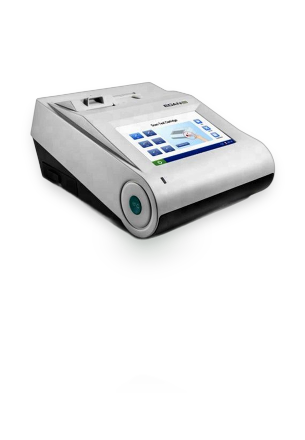

Optica Enterprises
Diagnostic Devices
Precision diagnostic instruments for modern clinical and laboratory practice.

The EDAN i15 is a versatile point-of-care blood gas and chemistry analyzer designed for rapid critical care decisions. Using a self-contained cartridge system, it measures blood gas, electrolyte, and metabolite parameters from a single whole blood sample in under two minutes, eliminating the need for central laboratory processing in emergency and intensive care settings.

The EXIAS E1 is a dedicated electrolyte analyzer utilizing Ion-Selective Electrode (ISE) technology to deliver fast, accurate measurement of serum, plasma, urine, and whole blood samples. Measuring six parameters — Na⁺, K⁺, Cl⁻, iCa²⁺, pH, and Hct — it returns results in just 25 seconds per test. Its auto-calibration function and quality control program ensure reliable performance with minimal operator intervention, making it ideal for routine electrolyte testing in any clinical laboratory.

The Getein 1100 is a fully automated fluorescence immunoassay analyzer designed for rapid, quantitative bedside testing. Supporting a wide range of clinical panels — including cardiac markers, infection indicators, thyroid function, fertility hormones, coagulation markers, tumor markers, and bone metabolism — it delivers laboratory-grade quantitative results in 3–15 minutes without specialized laboratory infrastructure.

The Mispa CLOG is a smart, fully automated hemostasis analyzer delivering reliable coagulation testing for routine and specialized diagnostics. Using an optical clot-detection method, it simultaneously processes two channels for PT, APTT, TT, and fibrinogen, with a built-in 37°C precision incubation chamber ensuring test accuracy.

The Mispa CXL Pro Plus is a high-throughput, random-access clinical chemistry analyzer built for medium-to-large laboratories demanding speed and versatility. With 240 tests per hour and 60-reagent onboard capacity, it supports a comprehensive biochemistry menu including liver, kidney, lipid, cardiac, and special protein panels, all with automatic rerun and dilution capability.

The Mispa Count X is a reliable automated hematology analyzer delivering 21 CBC parameters plus 3 histograms and 2 research parameters (NLR & PLR) from a minimal 9 µL sample. Designed for medium-throughput laboratories, it processes 60 samples per hour with a 3-part WBC differential and includes an intelligent auto-cleaning function to minimize daily maintenance.

The Mispa FAB 120 is a fully automatic, Made-in-India clinical chemistry analyzer offering 120 tests per hour with 40 onboard reagent and 40 sample positions. Supporting routine biochemistry, ISE electrolytes, and special protein testing, it features continuous sample loading, automatic blank calibration, on-board reagent cooling, and a 10.4-inch colour touchscreen for effortless operation in routine diagnostic laboratories.

The Mispa HX50 is a 3rd-generation, high-performance 5-part differential hematology analyzer that processes 50 samples per hour using Nucleic Acid Fluorescence Staining combined with Tri-angle Laser Scattering technology. Featuring an independent basophil test channel and complete CBC with reticulocyte analysis, it is the ideal choice for high-volume clinical and hospital laboratories requiring precision differential counts.

The Mispa Maestro is a fully automated glycohemoglobin (HbA1c) analyzer engineered for high-throughput diabetes monitoring. Delivering results in just 72 seconds per sample and supporting continuous loading of up to 50 samples, it uses RFID-based reagent management and a precise HPLC-based detection method to provide accurate HbA1c measurements with minimal operator intervention.

The Mispa Plus is a robust semi-automated biochemistry analyzer built around a proprietary Penta Lens Photometry System for exceptional optical precision. Supporting 300 programmable test channels, eight standard filter wavelengths, and endpoint, kinetic, and fixed-time measurement modes, it is a cost-effective and reliable solution for small-to-medium diagnostic laboratories operated through a 7-inch capacitive touchscreen.

The Mispa REVO is a Time-Resolved Fluorescence Immunoassay (TRFIA) analyzer offering highly sensitive quantitative testing using pre-filled test cartridges — no liquid reagent preparation required. Supporting thyroid, cardiac, fertility, infection, and bone metabolism panels, it uses QR code-based calibration for each cartridge lot and suits both laboratory and point-of-care settings.

The Mispa VIVA is a semi-automated clinical chemistry analyzer offering a cost-effective solution for laboratories running routine biochemistry on serum, plasma, urine, and CSF samples. Featuring the ERA Flow Cell (30 µL sample volume) with EMF-based pH measurement, six selectable filter wavelengths, and endpoint, kinetic, and fixed-time modes, it provides exceptional versatility at low operational cost.

The Mispa i3 is a dedicated cartridge-based specific protein analyzer featuring dual-channel detection — Nephelometry and Turbidimetry — for highly accurate quantification. Using prefilled, sealed cartridges for CRP, ASO, RF, IgA, IgG, IgM, allergy markers, and cardiovascular risk proteins, it requires no daily maintenance or liquid reagent preparation, making it ideal for POCT and small laboratory environments.

The Mispa nano Plus is a compact yet powerful fully automatic clinical chemistry analyzer delivering up to 360 tests per hour. Equipped with on-board reagent refrigeration at 2–12°C, a 40-position sample tray, automated washing, and calibration functions, it is a complete turn-key solution for small and growing laboratories seeking full automation without a large footprint.

The OPTI CCA TS 2 is a critical care blood gas and chemistry analyzer designed for rapid bedside and emergency testing. Using optical fluorescence-based single-use cassette technology and only 125 µL of whole blood, it delivers results for blood gas, electrolytes, and metabolites in under 120 seconds — with no calibration required. Its lightweight 4.3 kg design and 8-hour rechargeable battery make it essential for ICU, emergency, and operating theatre environments.

The Wondfo OCG-102 is a compact two-channel optical coagulation analyzer for routine and specialized hemostasis testing. Weighing only 850 g with a rechargeable battery, it accepts 20 µL capillary or venous whole blood and runs PT, APTT, TT, Fibrinogen, and ACT assays simultaneously on two channels using optical turbidity detection with a 37°C precision incubation chamber.
Our specialists are ready to help you choose the right equipment for your laboratory.